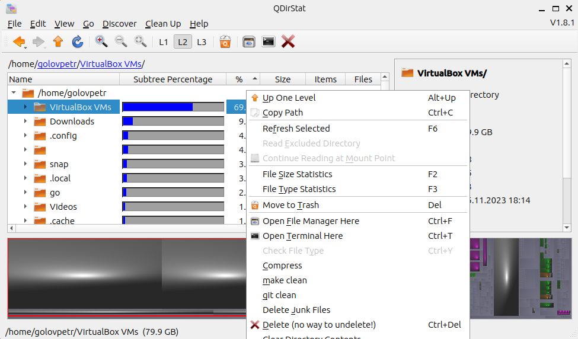
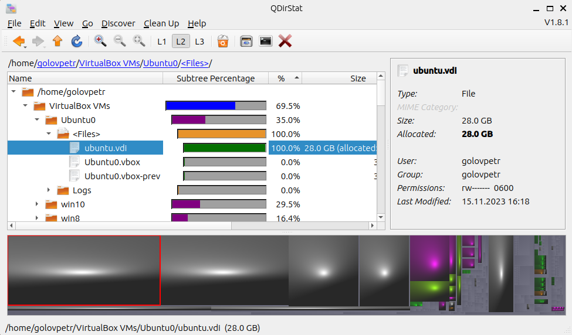
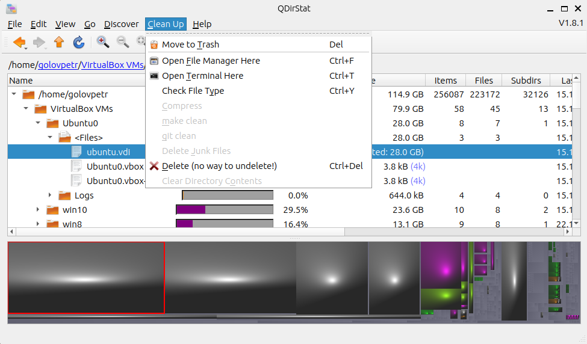

QDirStat - это программа для визуализации структуры использования дискового пространства в операционных системах на базе Linux. Она является свободной и открытой программой (open source) и создана сообществом разработчиков. QDirStat является портом программы KDirStat, разработанной для среды KDE.
Таким образом, QDirStat разрабатывается и поддерживается сообществом людей, участвующих в проекте. Он предоставляет графическую визуализацию использования дискового пространства, подробные статистические данные и удобный интерфейс для анализа структуры файлов и папок на диске.
Ссылка на сайт прозводителя: ссылка
GParted - это мощный графический инструмент для управления разделами и дисками в операционных системах, таких как Linux. Вот некоторые общие возможности программы GParted:
Группировка и сортировка - QDirStat предоставляет возможность группировки и сортировки файлов по различным критериям, таким как размер, тип, дата изменения и другие. Это упрощает анализ данных и поиск крупных или устаревших файлов.
Интерактивное удаление - Пользователи могут взаимодействовать с графическим представлением дискового пространства, выбирая и удаляя файлы и папки прямо из визуализации.
Поддержка различных языков: - QDirStat предоставляет интерфейс на нескольких языках, что делает его доступным для пользователей со всего мира.
Общие возможности с директориями
Возможность просмотра директорий
Возможность отчитски
QDirStat предоставляет многофункциональный инструментарий для анализа использования дискового пространства в среде Linux. Программа выделяется графической визуализацией данных, позволяя пользователям наглядно оценить, какие файлы и директории занимают больше всего места. Статистика по типам файлов облегчает определение основных источников расходования дискового пространства.
Для домашних пользователей QDirStat предоставляет удобный способ освободить дисковое пространство, выявляя крупные или устаревшие файлы. Это также улучшает организацию мультимедийных файлов. В корпоративной среде программа находит применение в анализе и оптимизации использования ресурсов на серверах, а также в мониторинге общих директорий, обеспечивая эффективное управление общими ресурсами.
Плюсы:
Минусы: